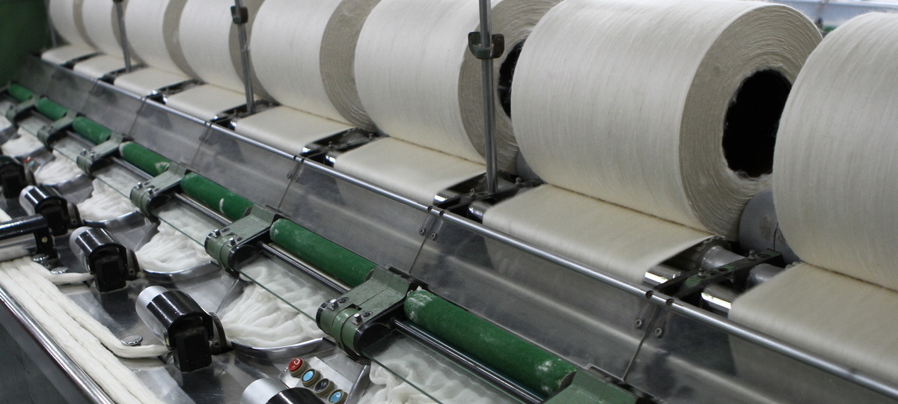
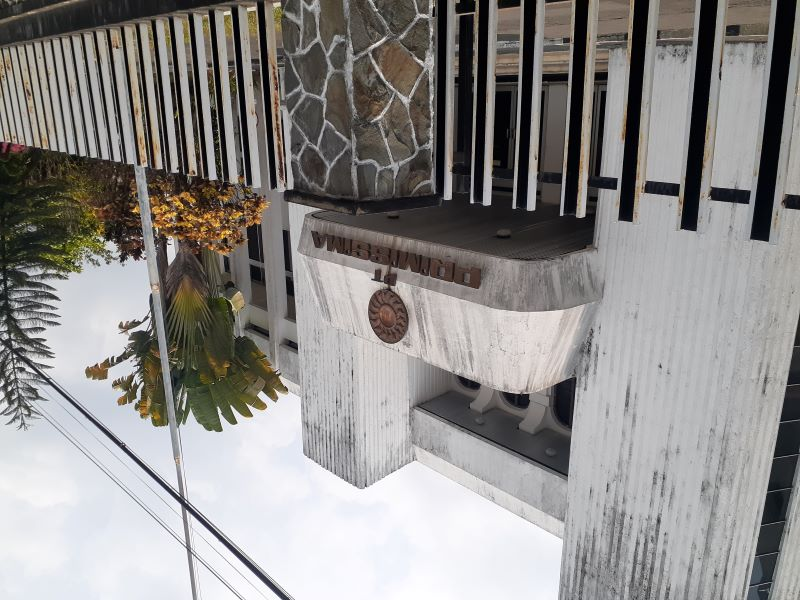

Warisan Tekstil dari Yogyakarta
PT Primissima (Persero) merupakan perusahaan yang dikenal dalam bidang industri tekstil. Dalam perjalanan perusahaan berkaitan dengan kegiatan pemintalan dan pertenunan serta pengembangan kain grey dan cambric yang berhubungan dengan kebutuhan industri tekstil dan batik.
Integritas
Menempatkan kejujuran dan tanggung jawab sebagai nilai penting dalam membangun kepercayaan di PT Primissima
Keahlian Tekstil
Ahli dalam industri pengolahan tekstil sejak tahun 1971
Inovasi
Selalu mengembangkan pengetahuan dan kemampuan untuk menghadapi perubahan industri tekstil
Material Berkualitas
Paham karakteristik benang dan kain sebagai unsur penting dalam menghasilkan produk tekstil sesuai kebutuhan dan standar kualitas
Bidang Usaha
Kegiatan utama PT Primissima dalam rantai industri tekstil dan batik
Pemintalan
Mengolah serat menjadi benang sebagai bahan dasar pembuatan kain.
Pertenunan
Menenun benang menjadi lembaran kain dengan karakteristik sesuai kebutuhan.
Kain Grey
Kain mentah hasil tenun yang menjadi bahan baku proses lanjutan tekstil.
Kain Cambric
Kain halus yang banyak dibutuhkan sebagai bahan baku batik.
Tahun Berdiri 22 Juni 1971
Tahun Berkiprah di industri tekstil
Bidang Usaha pemintalan s.d. cambric
Kantor Pusat Sleman, Yogyakarta

Sejarah Perusahaan
Jejak perjalanan PT Primissima (Persero) dalam industri tekstil dan batik Indonesia

-
Pendirian
Dirintis sebagai Perusahaan Patungan
PT Primissima dirintis sebagai perusahaan patungan dalam rangka pelaksanaan Undang-Undang Nomor 9 Tahun 1969 tentang bentuk-bentuk usaha negara.
-
Resmi Berdiri
Kemitraan Pemerintah dan GKBI
Perusahaan resmi berdiri pada 22 Juni 1971 melalui akta Notaris R. Soerojo Wongsowidjoyo, S.H., di Jakarta Nomor 31 Tahun 1971, sebagai usaha patungan (joint venture) antara Pemerintah Republik Indonesia dan Gabungan Koperasi Batik Indonesia (GKBI).
-
Tujuan Pendirian
Menyediakan Bahan Baku Batik
Perusahaan didirikan untuk memenuhi kebutuhan bahan baku batik, khususnya kain halus (cambric/mori), bagi pengrajin dan industri batik di Indonesia.
-
Perkembangan
Pemintalan hingga Kain Cambric
Kegiatan usaha berkembang mencakup pemintalan dan pertenunan, serta pengembangan kain grey dan cambric untuk melayani kebutuhan industri tekstil dan batik.
PT Primissima (Persero)
Industri tekstil: pemintalan, pertenunan, kain grey & cambric
Pemerintah Republik Indonesia & GKBI
22 Juni 1971
Jl. Magelang No.Km.15, Sebayu, Triharjo, Kec. Sleman, Kabupaten Sleman, Daerah Istimewa Yogyakarta 55514
“Dimana Saja Pantas Karena Kualitas”
Struktur Organisasi
Susunan organisasi PT Primissima (Persero)
-
Direktur Utama
-
Sekretariat
Bagian Sekretariat
-
Departemen Keuangan
Bagian Akuntansi
Bagian Keuangan
-
Direktur
-
Deputi Komersial
-
Departemen Komersial
Bagian Pemasaran
Bagian Penyimpanan
Bagian Logistik
-
Departemen HRD
Bagian Ketenagakerjaan
Bagian Kesejahteraan & Diklat
-
-
-
Deputi Produksi
-
Departemen Produksi
Bagian Produksi Pabrik I/II
Bagian Produksi Pabrik III
Bagian Pemeliharaan Weaving
Bagian GF & PPK
Bagian Listrik
Bagian Utilitas
-
-
Deputi Pengawasan Intern
Bagian Audit dan Konsultasi
-
Kontak
Hubungi PT Primissima (Persero)